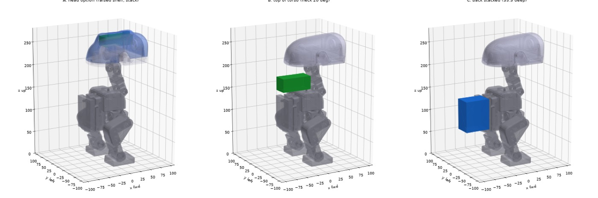
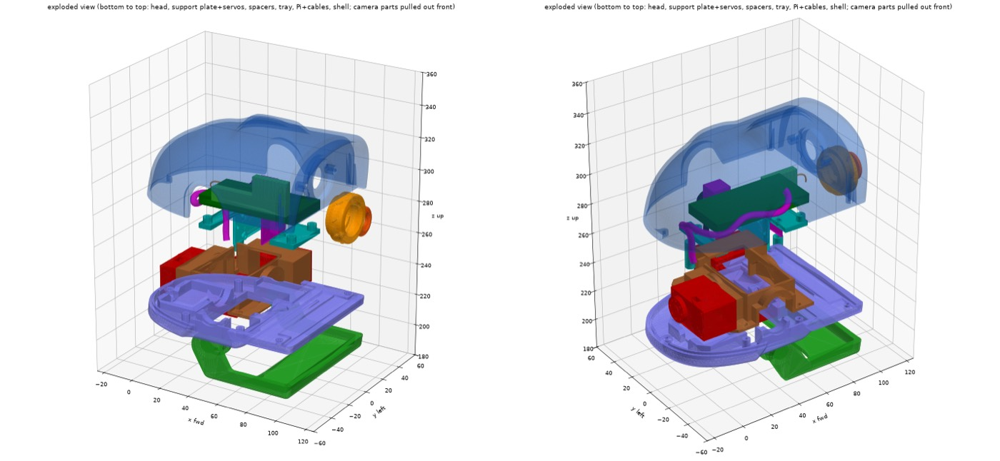
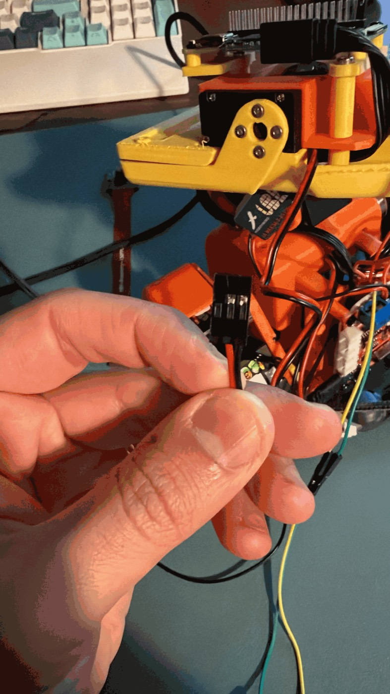

XGO-Duck is a small 3D-printed biped that learned to walk in simulation. The original runs on an Arduino UNO Q. This is the story of building one with a Raspberry Pi Zero 2 W in its head instead: every part we printed, every wire we cut, every mistake, and the plan for teaching it new tricks.
15Feetech servos on one bus
99.8 Hzservo feedback loop on the Pi
50 Hzneural-network policy
5.20 Vmeasured on the Pi's supply
The duck on this page is the real CAD model from the training repository, with all 14 joints wired up. Drag to rotate it, scroll to zoom, hover a part to see its servo ID. As you read, it acts out each chapter, and in chapter 02 it replays today's real test data.
00Phase 0
The idea
Why a duckInspiration: Microduck and XGO-Duck
Pollen Robotics built Microduck, a tiny bipedal duck whose walk is learned with reinforcement learning in MuJoCo and then copied onto real servos. Luwu Dynamics adapted it into XGO-Duck: a printable body, fifteen Feetech 1910 servos, an Arduino UNO Q and a custom expansion board. They publish the runtime and the training code, and the duck walks, gets up, picks things up with its beak and does a somersault ("roulade").
The question for this build: can the same duck run on a Raspberry Pi? A Pi Zero 2 W is cheap and widely available. It has Wi-Fi and Bluetooth, and a camera port. If it can keep up with the 100 Hz servo loop, the duck gets a camera and a gamepad almost for free, and anyone with a Pi can build one.
Goal: same body, same trained policies, same web control page. Only the electronics and the low-level loop change. Then add a camera, an Xbox controller, and our own training runs.
Two computers versus oneWhat changes from the original
The UNO Q is really two computers on one board. A Qualcomm Linux processor runs the neural networks and the web page, and an STM32 microcontroller runs the hard real-time loop: reading 15 servos and the IMU 100 times a second. They talk over an internal serial bridge. On the Pi, one Linux computer does both jobs. Upstream's Linux code runs unchanged. The microcontroller sketch is ported to a Python thread (mcu.py) that speaks the same binary messages, so the upstream code can't tell the difference.
XGO-Duck (original)
This build
Brain
Arduino UNO Q (Linux + STM32)
Raspberry Pi Zero 2 W, Debian 13, Python 3.13
Real-time loop
Zephyr sketch on the STM32
mcu.py, a Python port of the sketch
Servo interface
Luwu expansion board, Serial1 at 1 Mbps
Feetech FE-URT-2 over USB, 1 Mbps
IMU
QMI8658 on the expansion board
MPU6050 on I²C, address 0x69, axes configurable
Battery
18650 pack 8.4 V, more than 3500 mAh
AOLIKES 2S LiPo 2600 mAh + 5 V UBEC for the Pi
Where the computer sits
In the body
In the head, on a printed tray under a taller head shell
Camera
None
OV5647 CSI camera behind one eye (parts printed, not yet fitted)
Calibration
Web page, drives every servo to centre
Web page, plus a by-hand teach tool with torque off
Gamepad
Web joystick
Web joystick, Xbox controller over Bluetooth planned
Click any block to jump thereThe whole system on one page
This map stays with you: a small copy sits under the duck and lights up the part you're reading about. Red lines carry power, blue lines carry data, and dashed boxes are planned.
powerdataplanned
01Phase 1 · build
Printing, placing and wiring
Bambu printer · PLAPrinting the body
The body is printed from the upstream structure/ files in orange and yellow PLA, with TPU for the feet and beak. The 15 servos were given their IDs one at a time and centred before assembly: 10 to 14 for the left leg, 20 to 24 for the right, 30 to 33 for the neck and head, and 34 for the beak. By 3 November the mechanics were almost fully assembled.
On the right, the model is pulled apart along its joints. Each piece is one body in the simulation, and each joint between two bodies is one servo.
We only changed parts where the Pi forced it. Every new part is a drop-in replacement in the same coordinate frame as the original, listed in PRINT_LIST.md.
The duck today, sitting. The yellow head plate carries the Pi Zero 2 W. The head shell isn't on yet.
Placement studyWhere does a Pi fit in a duck?
The Pi needed a home. We modelled three options against the moving legs and neck before printing anything:
On the back as a backpack: rejected. The body has no room at the sides because the legs sit right beside the battery box, and a backpack ends up 78 mm wide.
Stacked on the back: rejected. That makes the body 53 mm deep, which breaks the get-up motion.
In the head: chosen. The head has the most free volume, and the camera can sit right behind the eye.

The three placements we compared. The leg sweeps made the decision.
The head got a new set of parts: a Pi tray on two spacers, a camera mount, a taller shell and an eye with a lens hole. The first test print of the shell on 8 November showed that the Pi with its plugged-in jumper wires didn't fit. The ridge was raised over the whole length of the Pi (up to 16.5 mm) to leave room for the Dupont plugs.

Head v2, exploded: shell, Pi on its tray, spacers, support plate with servos, and the camera at the front.Old shell (grey) against new shell (red). The orange box is the room kept for the jumper plugs.
The Pi on its tray in the head, IMU wires on the header. The tray screws switched from M2 to M3 × 30 on 7 November.
7.4 V and 5 VPower: one battery, two voltages
The servos run directly on the 2S LiPo battery (7.4 V, up to 8.4 V when full). The Pi needs a clean 5 V. We started with a PiSugar 3 battery board, then removed it: one battery is simpler and lighter. Now a small switching regulator (a UBEC: universal battery eliminator circuit) makes 5 V from the same battery.
Battery XH plug and UBEC input both go into the URT-2's blue screw terminal (V1 and G). The XH plug is the on/off switch.
UBEC output: red to Pi pin 4 (5 V), black to pin 14 (GND), using two jumper wires. Never push the 3-slot plug straight onto the header: the black wire could land on a 5 V pin and short it.
The blue jumper on the UBEC selects 5 V or 6 V. We measured 5.20 V before connecting anything, and the Pi reported throttled=0x0 (no undervoltage) on battery.
The battery only charges off the robot (HelpersLab 8.4 V 2 A charger).
The UBEC. It's listed as ZHITING on Amazon, but the board says Hobbywing. Same part.

The 3-slot output plug: red and black, one slot empty. This is why it goes on through two jumpers.
Servo bus · I²C · USBCabling the duck
All 15 servos share one serial bus: every servo listens on the same three wires (signal, power, ground) and answers only to its own ID. The FE-URT-2 adapter turns that bus into USB for the Pi. It only has two servo sockets, so the chains are split:
Port 1: both legs (IDs 10 to 14 and 20 to 24), joined with a Y splice.
Port 2: the neck chain (30 to 34), on a cut Waveshare 5264 cable.
MPU6050 IMU: pins 1 (3.3 V), 3 (SDA), 5 (SCL), 6 (GND) and 17 (3.3 V to AD0, which sets address 0x69). It will sit flat on the reprinted battery box.
Pi to URT-2: a USB cable into the Pi's middle "USB" port. Four UART wires on pins 8 and 10 were the alternative. We kept USB, which turns out to matter for Bluetooth (see the Xbox controller).
The Y splices were first planned with Wago 221 lever clamps. They were too bulky, so we used solder-seal sleeves instead: a sleeve shrinks over the joint and the solder ring inside melts with a heat gun. On 17 November a scan from the Mac found all 15 IDs on the bus.
Reprinted battery box: four posts for the URT-2 (blue) and two for the MPU6050 (red, underneath). It's ready to print.02Phase 2 · calibrate
Software, calibration and tests
Two loopsHow the software thinks
Two loops run on the Pi. The fast loop (100 Hz) reads every servo and the IMU, enforces the safety rules and sends goal positions. The slow loop (50 Hz) builds a 61-number picture of the robot and asks a small neural network what each joint should do next.
Everything runs as a systemd service (xgo-duck) that starts at boot, with the web page on port 9527. The robot always boots disarmed with torque off. The Mac side has a setup wizard, a servo bus tool, an IMU checker and a deploy script, and 48 tests run the real upstream controller and policies against simulated servos.
What does 0° mean?Calibration: three poses to know
A servo only reports a raw number from 0 to 4095 for one full turn. Calibration records, for each joint, the raw number at which the joint is at 0° in the simulation. Three poses matter, and you can show each on the duck:
Zero pose: legs straight down, feet flat, neck vertical, head level, beak closed. Every angle is measured from this, so it's what we teach.
Home pose: the crouch the robot stands in. Hips and ankles ±23°, knees 0°, hip roll ±5°, neck and head pitch 20°. The software works this out from the zero pose.
Sit pose: the resting pose on the table. It's useful as a safe place to start torque, but it can't be the zero: the network would think folded legs are straight.
The upstream calibration page has a trap. Entering it switches torque on and drives all 15 servos to raw 2047 at once. Our neck servo 30 sat at raw 276, so it would have swung about 160°. So we wrote teach_zero.py instead. With torque off, you hold the duck in the zero pose by hand and press Enter. It averages the encoders for 1.5 seconds, warns about anything that moved or sits near the 0/4095 wrap point, saves zero_pos.json on the Pi and checks that the service loaded it.
The zero pose reference, from the simulation model (qpos = 0).
Saved zeros, IDs 10 to 34: 1782 1977 1801 2247 1776 · 2689 2200 2358 1508 1482 · 1417 2008 1028 3219 1500. The lowest is 1028 and the highest 3219, so none is near the wrap point.
Replay of 18 NovemberThe test lab
Every first test is built to fail safely. Each button replays a real run from today on the 3D duck, with the actual terminal output. Angles come from the real raw readings and the saved zeros: angle = −(raw − zero) × 360 / 4095.
Pick a test. The duck replays it on the bench.
A · HoldTorque on exactly where each servo already is: set goal = present, then enable torque. Proves torque works without any jump. Result: all 15 held at 0 counts off.
B · NudgeEach joint moves 4° and back, in ID order. Shows every servo answers, that the IDs match the right joints, and which way each one turns. All came back within about 1°.
C/D · Zero rampSlowly drive the legs to where the software thinks "straight" is, at soft stiffness (KP 4), with the duck held in the air. If the legs look straight, the calibration is right. Hips and knees got within about 1°.
E · AnkleServo 24 stalled every time. The foot moves freely by hand, so it's friction inside the servo: 9° short at KP 4, 3° short at KP 8. It may get a little more stiffness later.
Still open: did the legs look straight during test F? When the duck was hand-held, the hips read about 24° on both sides. If the eye agrees with the numbers in test F, the zeros are final. If not, we teach them again, this time with torque holding the pose.
03Phase 3 · next
Standing, steering and seeing
Which way is down?The IMU
The policy feels gravity through the IMU. If the axes are mounted the wrong way round, it thinks it's falling while standing still. Next steps:
Print and mountPrint battery_urt2.stl and screw the MPU6050 flat on its two posts under the URT-2.
Two-pose axis checkimu_check.py: hold the duck upright, then nose-down. It works out the mounting axes for config.toml.
Gyro biasAverage 5 s at rest. We saw about 2.4 °/s offset on the x axis on the bench. --bias --write subtracts it.
Deploy the 11 November safety updateLow-battery cutoff (6.6 V for 3 s), battery and temperature readout, IMU dropout recovery.
Hands around itFirst stand, first steps
Default pose in the airPose it close to the home pose first, then press "Default pose": the jump stays small.
Supported stand on the tableHands around it. Watch the battery and servo temperatures in the status page.
Walk policy at low speedForward speed 0.1 first. The head is about 23 g heavier than in the model, so watch for tipping forward.
Get-up, pick, rouladeOnly after walking is stable.
Before arming the policy: set the web page's head sliders back to 0. Today we moved them while the duck was disarmed and nothing happened, because they're requests to the policy, not servo controls. When armed, the policy would start with the head turned.
PlannedDriving it with an Xbox controller
Microduck builders drive their ducks with a gamepad. The Pi Zero 2 W has Bluetooth on board, so an Xbox Wireless Controller can connect directly. Try the pad below (or W/A/S/D): it steers the duck on the bench the same way the sticks will.
+0.00 vx · forward, limit ±0.4 m/s+0.00 vy · sideways, limit ±0.3+0.00 ωz · turn, limit ±1.0 rad/sDead zone 0.1, like the web joystick.
The plan:
Pair with bluetoothctl, and read the controller with Python evdev in a small service next to the robot.
Left stick sets forward and sideways speed, right stick sets turning. Bumpers move the head, a trigger opens the beak. A, B and X start get-up, pick and roulade. Start arms, back disarms.
It posts to the same /api/mode and /api/command routes as the web page, so the safety rules stay the same. If the controller disconnects, commands stop, and the 250 ms timeout disarms the duck.
A side effect of a wiring choice: the UART link would have needed dtoverlay=disable-bt, which turns Bluetooth off. Keeping the URT-2 on USB keeps Bluetooth free.
PlannedGiving the duck an eye
A DAOKAI OV5647 camera module (25 × 24 × 9 mm, 72° lens, €9.24) goes behind the right eye on a printed mount. The ribbon runs over the Pi to its 22-pin camera connector. We returned the USB camera we tried first: too big for the head, and it would have taken the Pi's only data port.
It's mounted upside down, so the image is rotated 180° in software.
First use: a live view in the web page.
Then: face tracking through the four head channels, so the duck looks at you while it walks.
Later: vision inputs for new trained behaviours (see phase 04).
04Phase 4 · learn
The reinforcement-learning plan
From simulation to servosHow the duck learns
The walking skill is a small neural network trained by trial and error (PPO) in MuJoCo, on thousands of simulated ducks at once. Every robot in the simulation has the exact masses and inertias from CAD, and the servos follow a measured model of the HLS1910. The result is exported as an ONNX file that the Pi runs 50 times a second.
Run the upstream policies as they areThey were trained for the original XGO-Duck. If the duck walks with them, the port works end to end.
Measure what's differentHead mass (Pi + tray + camera, about +23 g), the IMU's position and noise (MPU6050 on the battery box, not the QMI8658), USB latency, and servo 24's friction.
Update the modelHead body mass and inertia, the IMU site, and friction ranges in the MJCF.
Retrain on a rented GPUuv run train Mjlab-Velocity-Flat-XgoDuck --env.scene.num-envs 4096. Randomize mass, friction and latency so the policy survives the real robot.
Check sim-to-sim, then on the robotRun the new ONNX in plain MuJoCo first, then on the duck held in the air, then supported, then free.
New skillsUse the camera: look at a face, follow a ball. The four head channels are the bridge between vision and the walking policy.
The get-up you see on the bench is keyframed for illustration, and so is the walk. The real motions come from the trained policies.